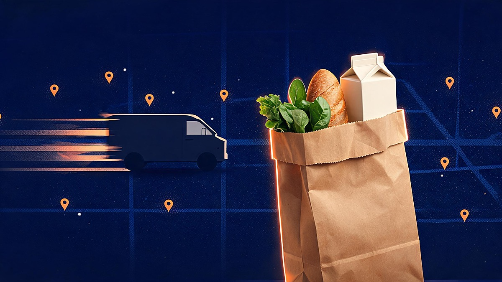
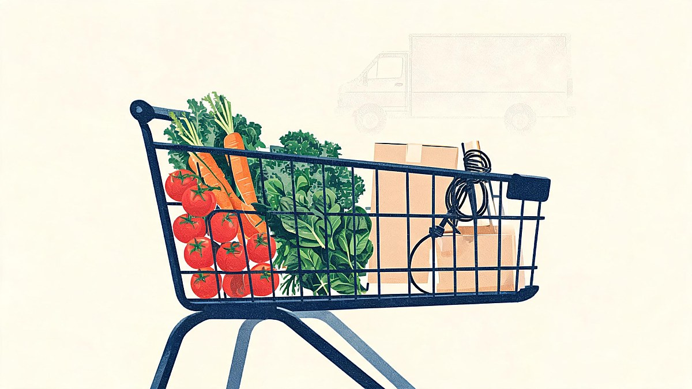
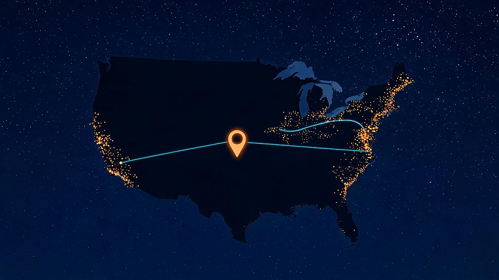
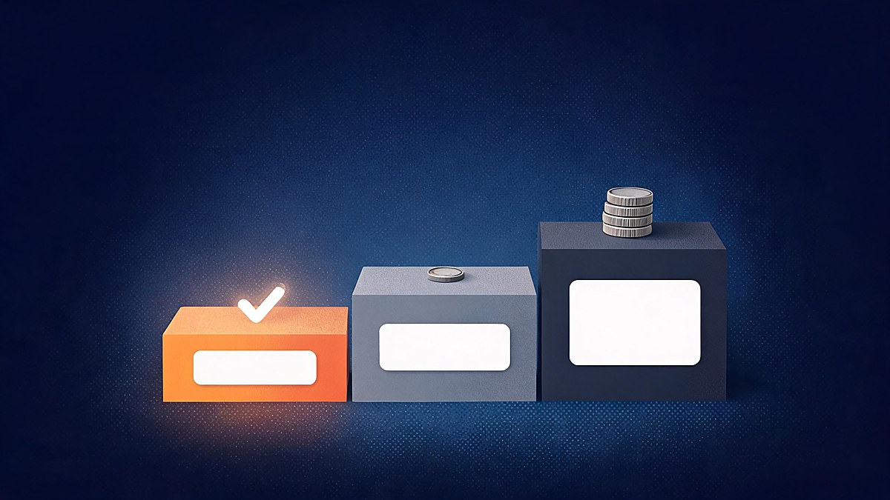

Amazon Expands Same-Day Grocery Delivery to 2,300 Cities: What Changes

In short
Amazon's same-day grocery expansion brings fresh produce, dairy, meat, seafood, baked goods, and frozen food into the regular Amazon cart in more than 2,300 U.S. cities and towns. Prime members generally get free delivery on eligible orders of $25 or more, but local inventory, delivery windows, and fees still determine what each address can actually receive. aboutamazon.com
Quick answer: Amazon's same-day grocery expansion brings fresh produce, dairy, meat, seafood, baked goods, and frozen food into the regular Amazon cart in more than 2,300 U.S. cities and towns. Prime members generally get free delivery on eligible orders of $25 or more, but local inventory, delivery windows, and fees still determine what each address can actually receive.
Table of Contents
- What Amazon is expanding to more than 2,300 cities?
- Where is same-day grocery delivery actually available?
- What can shoppers order and what does it cost?
- How is this service different from Amazon Fresh, Whole Foods, and Amazon Now?
- Why does the expansion matter beyond a faster grocery order?
- What else do shoppers ask about Amazon grocery delivery?
- What should shoppers check before placing an order?
What is Amazon expanding to more than 2,300 cities?

Amazon is expanding the ability to add perishable groceries to its existing Same-Day Delivery service, rather than launching a separate grocery-only app. Eligible shoppers can place fresh food and regular Amazon products in one cart, then receive the order within hours. press.aboutamazon.com
The rollout began publicly on August 13, 2025, when Amazon said fresh groceries were available through Same-Day Delivery in more than 1,000 U.S. cities and towns. By December 10, 2025, Amazon said availability had reached more than 2,300 cities and towns; its page was later updated on May 12, 2026 and said that further expansion would continue. Amazon's August 2025 launch notice and May 2026 update describe those milestones.
The item categories matter as much as the city count. Amazon says the same-day catalog can include produce, dairy, meat, seafood, baked goods, and frozen food, alongside household essentials and other general merchandise. That combined cart is the central change: a shopper can add dinner ingredients to an order that also contains paper towels, a book, or a charging cable.
The important point is that Amazon has made perishables part of a pre-existing delivery network, not simply expanded a traditional online grocery storefront.
Where is same-day grocery delivery actually available?

Same-Day Delivery with perishables is available in more than 2,300 U.S. cities and towns, but a city-level coverage figure is not a guarantee for every neighborhood or ZIP code. Amazon tells shoppers to enter their delivery address to see which grocery options, products, delivery windows, and fees are available locally. aboutamazon.com
Amazon has named locations including Boise, Salt Lake City, Fort Collins, Omaha, Sugar Land, Des Moines, Kennesaw, and Gaithersburg among areas added in the later expansion. Those examples confirm geographic breadth, but they are not a complete city list or a substitute for checking an individual delivery address.
| Amazon grocery option | Typical purpose | Delivery timing described by Amazon | Prime delivery fee described by Amazon |
|---|---|---|---|
| Same-Day Delivery with perishables | A mixed cart of groceries and general Amazon items | Within hours | Free over $25 in most areas; $2.99 below the threshold |
| Amazon Fresh | A larger grocery order with a broader grocery-focused selection | Two-hour windows | Free over $100; lower-value orders carry fees |
| Whole Foods Market delivery | Whole Foods Market grocery order | Two-hour windows | $9.95 |
| Amazon Now | Urgent orders from a smaller, fast-turnover local selection | 30 minutes or less | $3.99, plus a small-order fee below $15 |
Source: Amazon's grocery delivery guide, accessed October 6, 2026. Fees and availability can vary by location and may change. aboutamazon.com
A shopper should not assume that Amazon Now is automatically available because Same-Day Delivery is available. Amazon describes Amazon Now as a separate 30-minute service operating in dozens of U.S. cities, while the more than 2,300-city figure refers to Same-Day Delivery with perishables. aboutamazon.com
The address entered at checkout, not a national expansion headline, is the reliable test of what Amazon can deliver to a particular home.
What can shoppers order and what does it cost?

The service is designed for fresh groceries and everyday products in a single order, with Amazon reporting thousands of eligible grocery items in the expanding catalog. For Prime members, Same-Day Delivery is free on orders over $25 in most areas, costs $2.99 below that threshold, and costs $12.99 for customers without Prime regardless of order size. aboutamazon.com
Amazon says its perishable selection for Same-Day Delivery grew by more than 30% from August to December 2025. The company also says nine of the ten best-selling Same-Day items in areas with the service were perishables, but those sales and basket figures are Amazon's own reported results, not independent market-wide measurements. aboutamazon.com
Free delivery is therefore conditional rather than universal. It depends on Prime status, meeting the order minimum, and whether the address is in an area where the service is offered under the stated terms.
How is this service different from Amazon Fresh, Whole Foods, and Amazon Now?
Same-Day Delivery with perishables is aimed at a fast mixed cart, while Amazon Fresh and Whole Foods Market delivery are more conventional grocery services with different fees and delivery windows. Amazon Now is faster still, but it is a separate 30-minute option with a narrower geographic footprint and a different fee structure. aboutamazon.com
Amazon Fresh is built around grocery shopping and two-hour delivery windows. Whole Foods Market delivery also uses two-hour windows, while Amazon Now is intended for immediate needs and offers thousands of items in 30 minutes or less in participating cities. aboutamazon.com
That distinction prevents a common misunderstanding: this announcement did not turn every Amazon grocery order into a 30-minute delivery. It expanded the reach of a same-day service that lets eligible customers combine perishables and general merchandise in one checkout.
Amazon's grocery expansion is also separate from the retail promotions covered in Veritya Daily's guide to Amazon retail activity around Prime Big Deal Days. A delivery option, an item price, and a promotion are different parts of the checkout decision.
The right Amazon grocery option depends on the basket, the delivery deadline, the local catalog, and the fee shown for that address.
Why does the expansion matter beyond a faster grocery order?
The rollout matters because it puts high-frequency grocery purchases into the same logistics and checkout flow Amazon already uses for household goods and general merchandise. That can make Amazon a more regular shopping destination for customers who previously used it mainly for nonfood purchases. press.aboutamazon.com
Amazon reported in December 2025 that perishable grocery sales through Same-Day Delivery had grown 30 times since January, and it later reported more than 40-fold year-over-year growth in perishable sales. Those figures show Amazon's internal momentum, but they should be read as company-reported metrics rather than independently audited measures of the overall grocery-delivery market. aboutamazon.com
The competitive implication is straightforward: a broad same-day network that carries perishables can make convenience shopping more contested, especially when fresh food can be added to a cart that already contains everyday items. The Associated Press reported that the August 2025 announcement put pressure on the wider grocery-delivery sector. Its report on the initial rollout also noted that Amazon had first tested the approach in Phoenix before adding Orlando and Kansas City. apnews.com
For readers tracking the infrastructure behind consumer services, this is one example of the technology trends shaping retail: delivery speed increasingly depends on localized inventory, fulfillment networks, and software that predicts what a neighborhood may order.
The consumer benefit is one-cart convenience, but shoppers still need to compare the actual catalog, order minimum, delivery slot, and total fee shown at checkout.
What else do shoppers ask about Amazon grocery delivery?
The questions below separate this grocery rollout from delivery preferences and Amazon's other grocery brands. Each answer reflects Amazon's published information, but checkout remains the final source for a specific order.
Why is Amazon no longer delivering to side porches?
Amazon's 2,300-city grocery expansion is not an announcement that side-porch delivery has ended nationwide. Amazon says customers can add delivery instructions and specify a preferred location, but available drop-off choices can vary by address and delivery. Check address settings, the checkout screen, and order tracking for choices available to that shipment. shipping.amazon.com
Which grocery chain is owned by Amazon?
Whole Foods Market is the grocery chain owned by Amazon. Amazon completed its acquisition of Whole Foods Market on August 28, 2017. Whole Foods delivery remains a distinct Amazon grocery option, usually offered in two-hour windows, rather than the Same-Day Delivery service that combines perishables with other Amazon items. press.aboutamazon.com
Is Amazon grocery available in my area?
Amazon grocery availability depends on the delivery address, local inventory, delivery capacity, order timing, and the specific Amazon service. Enter a ZIP code or delivery address on Amazon Grocery or in the Amazon shopping app, then look for Same-Day Delivery and the items that display an eligible delivery window. aboutamazon.com
What should shoppers check before placing an order?
Check the exact service, delivery window, available catalog, and total charge after entering a delivery address. The more than 2,300-city rollout expands the chance that Same-Day Delivery with fresh groceries appears, but it does not replace those order-level checks.
- Enter the delivery address before filling a cart.
- Confirm that the order is labeled for Same-Day Delivery, rather than Amazon Fresh, Whole Foods Market delivery, or Amazon Now.
- Check whether the cart meets the $25 Prime threshold in that area.
- Review the delivery window, substitutions, freshness protections, and final fees before placing the order.
For continuing coverage of consumer technology and retail changes, follow Veritya Daily's technology news coverage.
Sources
- aboutamazon.com - Amazon same-day fresh grocery delivery page (May 2026 update; fees; growth figures)
- press.aboutamazon.com - August 2025 launch notice (1,000+ cities; combined cart)
- aboutamazon.com - Amazon grocery delivery guide (option comparison; fees by location)
- apnews.com - Associated Press report on the initial rollout (sector pressure; Phoenix, Orlando, Kansas City tests)
- shipping.amazon.com - delivery instructions and drop-off preferences guidance
- press.aboutamazon.com - Whole Foods Market acquisition close (August 28, 2017)